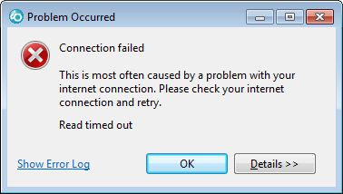
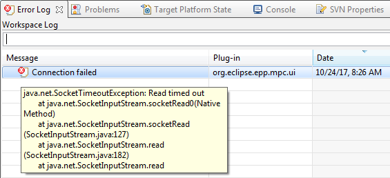
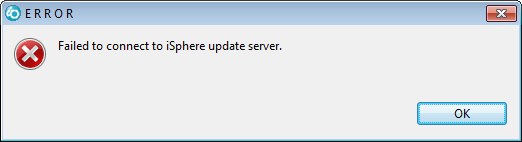
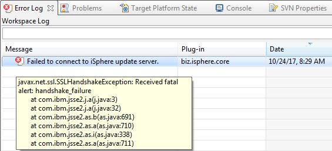
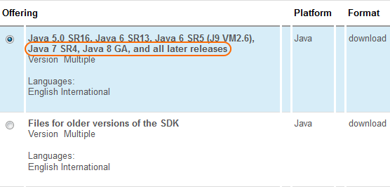
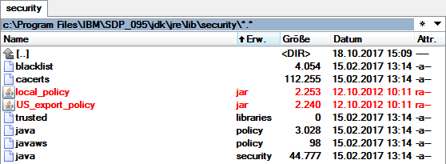

If you cannot connect to the Eclipse Marketplace or if checking for iSphere updates does not work, you may have to install the IBM unrestricted JCE policy files.
If you cannot establish a 5250 SSL connection, please refer to: Enabling SSL Sessions
Attempts to connect to the Eclipse Marketplace end with the following error:

The error logs shows the following log entry:

Attempts to check for iSphere Updates end with the following error:

The error logs shows the following log entry:

Download and install the unrestricted.zip file from the IBM web page Downloading and installing the unrestricted JCE policy files.
Make sure to download the current version "Java 7 SR4, Java 8 GA, and all later releases", because RDi 9.1 or higher uses at least Java 1.7 SR 8 or higher:

| Note: You need an IBM ID to login for downloading the file. The IBM ID is free of charge and does not hurt. |
Then copy the content of the zip file into the security folder of RDi:
[IBM]\SDP\jdk\jre\lib\security\
The path might be different on your PC.
Example from a test PC:

If you do not want to modify the original Java installation, you can copy the [IBM]\SDP\jdk\ to another location and add the following parameter to your eclipse.ini file or your Windows shortcut, for example:
The red files have been replaced with the files from the zip archive.